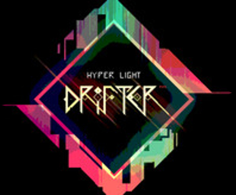
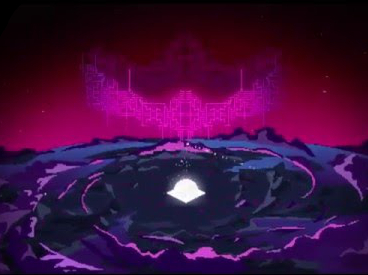
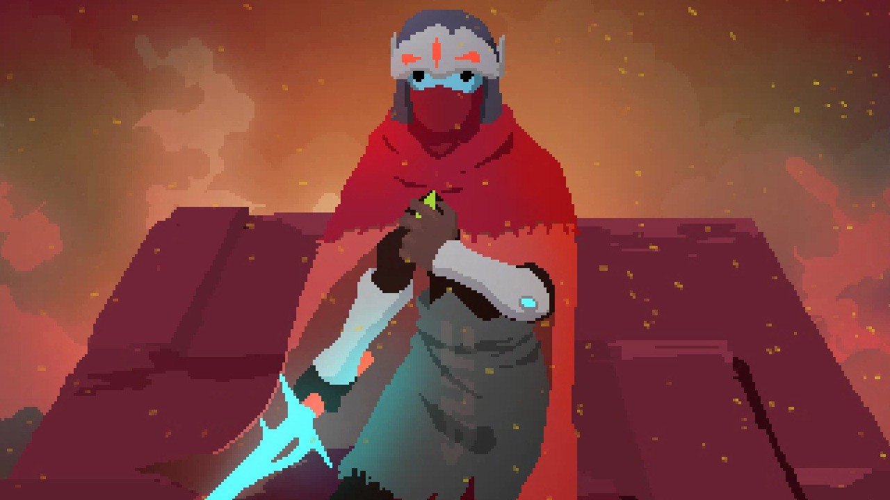
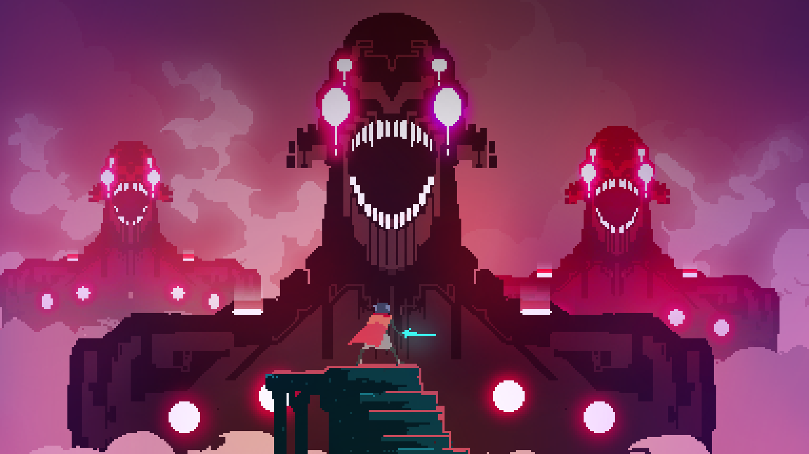

OVERVIEW

Hyper Light Drifter is a game made by Heart Machine, and the vision of Alex Preston. Designed as a metaphor for Preston's congenital heart disease, the game first appeared as a Kickstarter campaing in September 2013. The project initially had a goal of $27,000 but by the end of the campain had raised over $640,000 and reached multiple stretch goals. With the additional funding available, Preston hired an entire team of developers and released the game on multiple platforms. It was released to critical acclaim on March 31, 2016.
SETTING

Hyper Light Drifter is a game made by Heart Machine, and the vision of Alex Preston. Designed as a metaphor for Preston's congenital heart disease, the game first appeared as a Kickstarter campaing in September 2013. The project initially had a goal of $27,000 but by the end of the campain had raised over $640,000 and reached multiple stretch goals. With the additional funding available, Preston hired an entire team of developers and released the game on multiple platforms. It was released to critical acclaim on March 31, 2016.
CHARACTERS

Hyper Light Drifter is a game made by Heart Machine, and the vision of Alex Preston. Designed as a metaphor for Preston's congenital heart disease, the game first appeared as a Kickstarter campaing in September 2013. The project initially had a goal of $27,000 but by the end of the campain had raised over $640,000 and reached multiple stretch goals. With the additional funding available, Preston hired an entire team of developers and released the game on multiple platforms. It was released to critical acclaim on March 31, 2016.
STORY

Hyper Light Drifter is a game made by Heart Machine, and the vision of Alex Preston. Designed as a metaphor for Preston's congenital heart disease, the game first appeared as a Kickstarter campaing in September 2013. The project initially had a goal of $27,000 but by the end of the campain had raised over $640,000 and reached multiple stretch goals. With the additional funding available, Preston hired an entire team of developers and released the game on multiple platforms. It was released to critical acclaim on March 31, 2016.
LEGACY

Hyper Light Drifter is a game made by Heart Machine, and the vision of Alex Preston. Designed as a metaphor for Preston's congenital heart disease, the game first appeared as a Kickstarter campaing in September 2013. The project initially had a goal of $27,000 but by the end of the campain had raised over $640,000 and reached multiple stretch goals. With the additional funding available, Preston hired an entire team of developers and released the game on multiple platforms. It was released to critical acclaim on March 31, 2016.